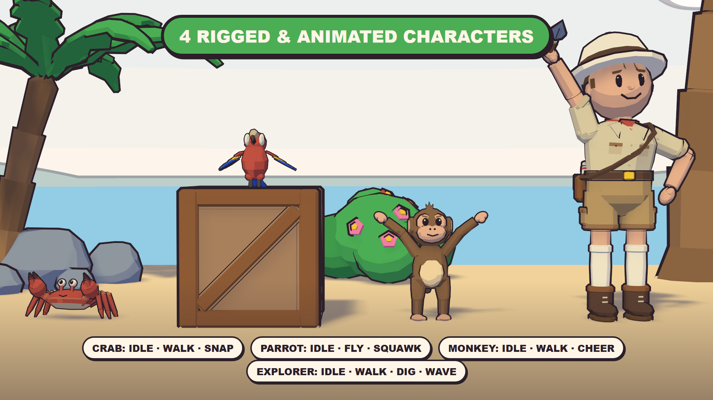
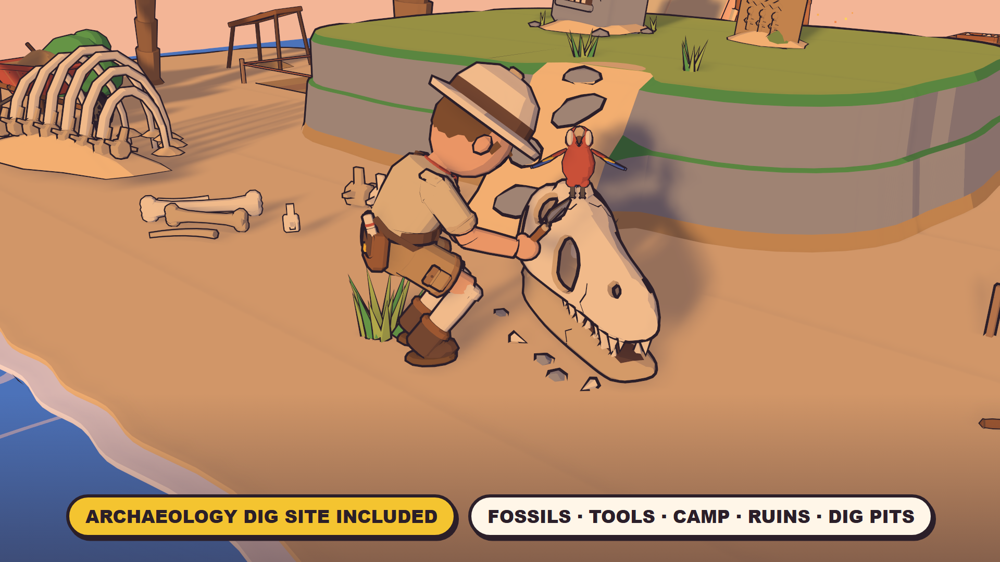
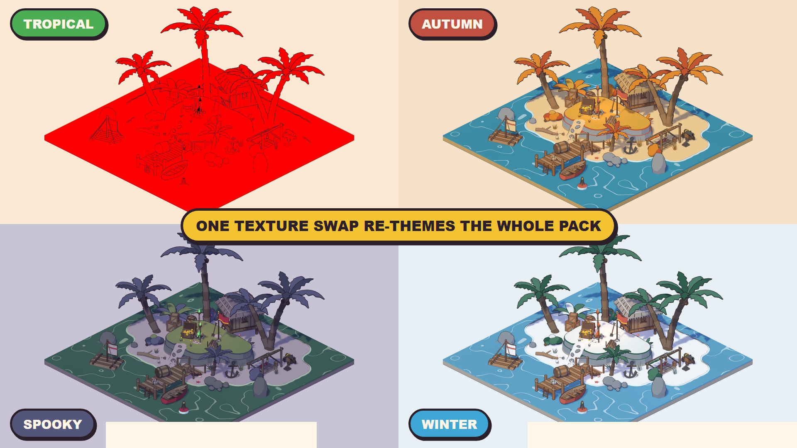

1. Install
- Unity 6000.0 LTS or newer, with URP or the Built-in Render Pipeline. The shaders contain a SubShader for each, so nothing needs converting.
- Import the package. Everything lives in
Assets/ToonTropical/. - Open a demo scene in
Demo/:Demo_TileIsland,Demo_HeroIsland,Demo_DigSiteorDemo_SmallIsland. Press Play, or just look at the Scene view: the water, wind and fire animate in edit mode too. - Want to walk around? Open
Demo_Exploreand press Play: you control the explorer on a roomy island with a camp, a village, a dock and a dig site (see section 5).
2. Using the assets
What's inside: 165 models: modular shore and cliff tiles, palms and plants, rocks, huts, docks, boats, camp gear, treasure and set dressing, plus an archaeology dig site (fossils, dig tools, a camp, ruins and dig pit tiles). Also 4 animated characters, 5 effects and a toon sky.
- Drag prefabs from
Prefabs/. The base mesh casts and receives shadows. - Game-ready colliders: terrain tiles, docks, stairs, the rope bridge, boats, the hut and the watchtower have exact MeshColliders, so characters can walk on and around them. Other props have a box over their footprint (up to 2 m tall), so flags, fronds and roofs never block a character and nothing can be climbed by accident. Plants and low clutter (under 0.45 m) have no collider, so characters walk through them. Add or swap colliders freely on your own prefab variants.
- Ink outlines are the
_Outlinechild of each prefab. Disable it to turn outlines off on that object. - The whole pack uses two materials (
M_Island_Palette,M_Island_Outline) and one 256 px palette texture, with GPU instancing on. Scale is 1 unit = 1 m, and pivots are at the bottom center.
3. Environment: themes, time of day, wind
Add Toon Tropical > TT Environment to any scene; the demo scenes already have one. It finds its palettes automatically. If they're missing, use Find Palettes from the component's context menu.
| Setting | What it does |
|---|---|
| Theme | Tropical, Autumn, Spooky or Winter. Re-colors every Toon Tropical material at once. |
| Time Of Day | Day, Sunset or Night. Swaps the palette, re-aims the assigned Sun, sets the camera backgrounds and scales the fire and lamp lights. |
| Wind | Direction, strength, frequency, flutter and gusts for palms, plants, grass, flags and the tent. |
| Animation clock | Drives the water, foam, flames and lamp glow. Use Fixed Time freezes them for screenshots. |
From a script (all pack scripts live in the ToonTropical namespace, so add using ToonTropical;): env.theme = TT_Environment.Theme.Winter; env.timeOfDay = TT_Environment.TimeOfDay.Night; env.Apply();
4. Modular terrain tiles
- Tiles are 2 × 2 m; snap them on a 2 m grid with any 90° rotation. Water is at 0.40 m, sand at 0.47 m and the plateau at 1.47 m.
- Shore tiles: Edge (A/B/C variants, interchangeable), Corner Outer, Corner Inner. Cliff tiles: Edge, Corner Outer, Corner Inner, Plateau, Ramp.
- Coastlines and cliffs only cross a tile edge at its midpoint, so any combination lines up. Keep cliffs at least one tile from the water.
- Dig Pit and Dig Trench replace any plain sand tile.
- The rope bridge comes in 2 m sections; finish each end with Rope Bridge End.
5. Characters
| Prefab | Clips (all looping, in place) |
|---|---|
| SK_Island_Crab | Idle, Walk (sideways), Snap |
| SK_Island_Parrot | Idle, Fly, Squawk |
| SK_Island_Monkey | Idle, Walk, Cheer |
| SK_Island_Explorer | Idle, Walk, Dig, Wave |
- Each prefab has an Animator controller with Idle as the default state and one trigger per clip:
animator.SetTrigger("Walk"); - TT Character Clip plays a chosen clip with a start offset, so several copies don't move in sync.
- Clips have no root motion, so move the transform from your own controller.
- The explorer is a Humanoid rig, so standard humanoid animations (Mixamo, Asset Store animation packs, Unity's Starter Assets controllers) retarget onto it. Swap the Animator controller or add your own clips. The crab, parrot and monkey use Generic rigs with their own clips.
Walk-around starter (Demo_Explore)
- Press Play in
Demo/Demo_Explore: WASD walk, Shift run, E wave, F dig, drag to look around, wheel to zoom. T changes the theme, N the time of day, H hides the help panel. With the Input System package, a gamepad works too. - TT Explorer Controller (needs a CharacterController) walks a character relative to the camera, drives its Idle / Walk / Wave / Dig triggers and keeps it out of the water. TT Follow Camera orbits and follows it, moving in when something blocks the view. TT Demo HUD is the optional help panel.
- Interactive foliage: add TT Foliage Pusher to any character and the grass, plants, bushes and flowers bend away as it walks through them, then spring back (up to 4 characters at once; set the radius per character). It works through the toon shader, so outlines and shadows bend too, in URP and Built-in.
- The scripts work with the Input System package or the old Input Manager, whichever your project uses. They are a starting point: swap in your own controller for a full game.
6. Using assets from other packs
Tools > Toon Tropical > Toonify Selection… gives models from other packs, or your own, the Toon Tropical look, so they sit naturally next to the pack's assets:
- Toon materials: each material becomes a copy using the Toon Tropical cel shader. It keeps the model's own texture and colour and follows the theme and time of day as a tint. Cutout foliage keeps alpha clipping and renders double-sided.
- Ink outlines: adds an
_Outlinechild mesh, the same as the pack's prefabs. Width is relative to each object's size; skinned characters work too. - Select objects in the scene, then click Toonify. Generated materials and outline meshes go to
Assets/ToonTropical_Generated, and the originals are never modified. Remove outlines undoes the outline step. - You can also set any material to the
ToonTropical/Toonshader by hand and tick Textured Mode.
7. Sky and effects
- Toon sky: TT Environment's Sky field uses
M_Island_Sky. It has a banded gradient, flat inked clouds, distant islands, a sun or moon and stars at night, all following the theme and time of day. Perspective cameras listed in Cameras show it; orthographic ones keep the flat backdrop colour. Untick Use Sky to turn it off. - Effect prefabs in
Prefabs/FX:FX_Splash,FX_Dust(one-shot: instantiate or callPlay()),FX_Sparkle,FX_Smoke,FX_Fireflies(looping). They're flat cel shapes with an ink rim and dim with the time of day.
8. Performance tips
- Toon shader Shadow Blur (URP only): 0.08 m by default; set it to 0 on mobile.
- Shadows: about 4 cascades at 4096 and 50 m in a game. At a low resolution or long distance, toon shadow edges stair-step.
- Outlines double the triangle count. Disable the
_Outlinechildren on distant or LOD objects. - The UI icons in
Icons/are 512 px transparent PNGs of every asset.
9. Support
Toon Tropical is made by Halfwatt Games. Questions and requests: halfwattgames@gmail.com. Documentation and the playable web demo: halfwattgames.github.io/toon-tropical. If the pack helps your game, a review helps a lot.